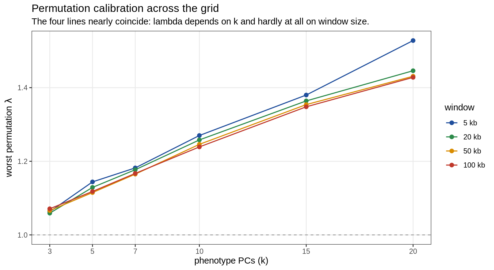
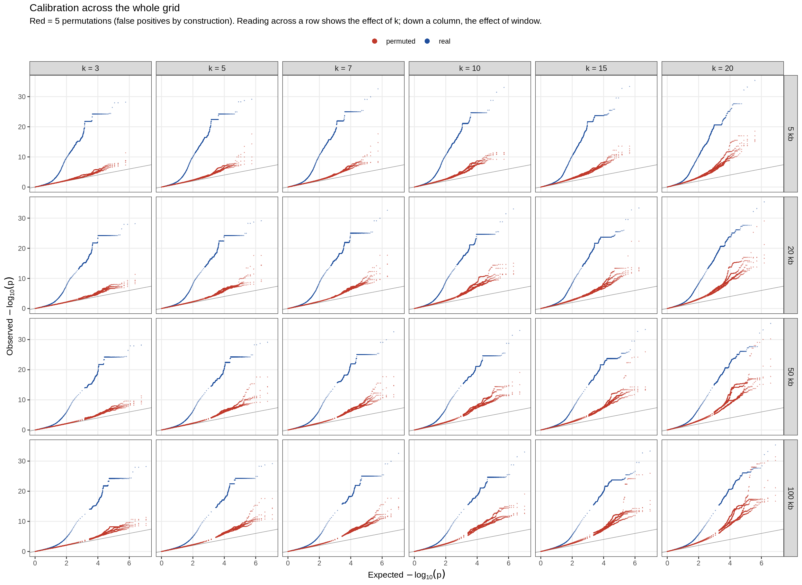
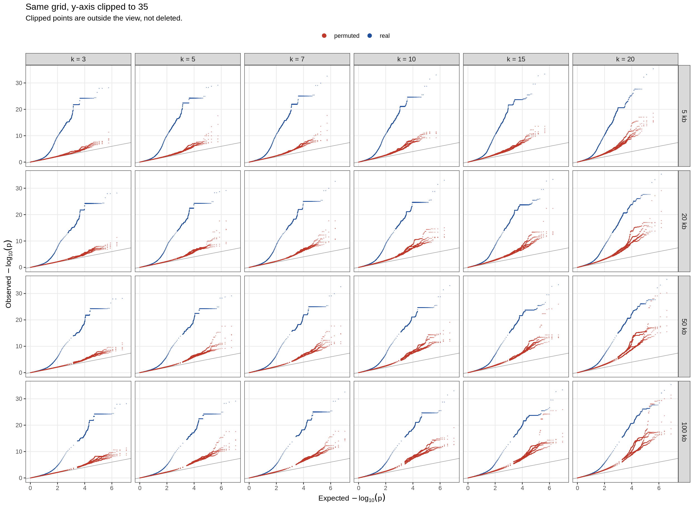
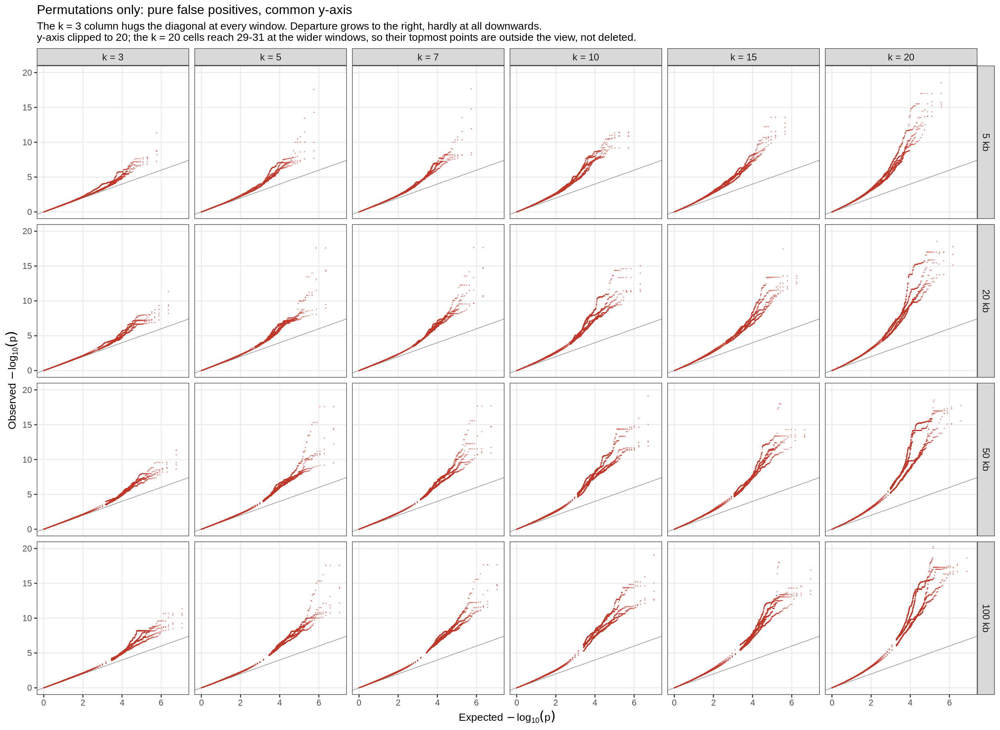

Last updated: 2026-09-10
Checks: 6 1
Knit directory: pumseq/
This reproducible R Markdown analysis was created with workflowr (version 1.7.0). The Checks tab describes the reproducibility checks that were applied when the results were created. The Past versions tab lists the development history.
The R Markdown is untracked by Git. To know which version of the R
Markdown file created these results, you’ll want to first commit it to
the Git repo. If you’re still working on the analysis, you can ignore
this warning. When you’re finished, you can run
wflow_publish to commit the R Markdown file and build the
HTML.
Great job! The global environment was empty. Objects defined in the global environment can affect the analysis in your R Markdown file in unknown ways. For reproduciblity it’s best to always run the code in an empty environment.
The command set.seed(20260202) was run prior to running
the code in the R Markdown file. Setting a seed ensures that any results
that rely on randomness, e.g. subsampling or permutations, are
reproducible.
Great job! Recording the operating system, R version, and package versions is critical for reproducibility.
Nice! There were no cached chunks for this analysis, so you can be confident that you successfully produced the results during this run.
Great job! Using relative paths to the files within your workflowr project makes it easier to run your code on other machines.
Great! You are using Git for version control. Tracking code development and connecting the code version to the results is critical for reproducibility.
The results in this page were generated with repository version dedb4c8. See the Past versions tab to see a history of the changes made to the R Markdown and HTML files.
Note that you need to be careful to ensure that all relevant files for
the analysis have been committed to Git prior to generating the results
(you can use wflow_publish or
wflow_git_commit). workflowr only checks the R Markdown
file, but you know if there are other scripts or data files that it
depends on. Below is the status of the Git repository when the results
were generated:
Ignored files:
Ignored: analysis/qtl_mapping_summary_cache/
Untracked files:
Untracked: analysis/qtl_mapping_betabinomial_grid.Rmd
Unstaged changes:
Modified: analysis/index.Rmd
Note that any generated files, e.g. HTML, png, CSS, etc., are not included in this status report because it is ok for generated content to have uncommitted changes.
There are no past versions. Publish this analysis with
wflow_publish() to start tracking its development.
suppressMessages({ library(data.table); library(ggplot2) })
knitr::opts_chunk$set(echo = TRUE, warning = FALSE, message = FALSE,
fig.align = "center", fig.width = 10)
PSI <- "/project/xinhe/xsun/pumseq/pumseq_processed/psi_qtl"
CG <- file.path(PSI, "qtl_betabinomial/calibration_grid")
G <- fread(file.path(CG, "grid_calibration.tsv"), sep = "\t")
PB <- fread(file.path(CG, "grid_problematic.tsv"), sep = "\t")
QQ <- fread(file.path(CG, "grid_qq_thinned.tsv.gz"), sep = "\t")
WINDOWS <- c(5, 20, 50, 100); KS <- c(3, 5, 7, 10, 15, 20)
wlab <- function(x) factor(sprintf("%d kb", x), levels = sprintf("%d kb", WINDOWS))
klab <- function(x) factor(sprintf("k = %d", x), levels = sprintf("k = %d", KS))
G[, window := wlab(window_kb)]
pal <- c("5 kb" = "#1f4e9c", "20 kb" = "#2c8a4a", "50 kb" = "#d98c00", "100 kb" = "#c0392b")Two parameters were never chosen on evidence: the cis
window and the number of phenotype PCs
(k). A 4 × 7 sweep of those already existed
(lrt_results_merged/grid_summary.txt), but it was a
scan sweep — it reports how many QTLs each
configuration discovers and says nothing about whether any of them is
correctly calibrated. It was also produced by the single-start fitter,
so its counts are partly the optimiser artefact described in the optimiser
page.
This page re-measures every cell the way calibration is measured everywhere else in the project: real data plus 5 genome-wide phenotype permutations, under the multi-start fitter. Permuted data cannot contain any genotype–phenotype relationship, so anything significant there is a false positive by construction.
24 cells: window ∈ {5, 20, 50, 100} kb × k ∈ {3, 5, 7, 10, 15, 20}. Phenotype
fold5_union_auto_noUCcalled(chr1–22, U/C-variant sites removed, φ-boundary sites retained),BB_PHI_STARTS=0.01,0.1,0.5, MLE selection, same 5 permutation seeds in every cell.
Cost scales with the number of cis tests, which is why this is affordable at all while the equivalent scan sweep is not: the scan runs 100 per-site permutations (101 passes) against this grid’s 6.
knitr::kable(G[npcs == 3, .(window, `tested sites` = tested_sites,
`cis tests` = format(tests, big.mark = ","))],
caption = "Tests per configuration at k = 3. A 20x wider window is ~20x the tests, so the 100 kb cells cost ~13x the 5 kb cells.")| window | tested sites | cis tests |
|---|---|---|
| 5 kb | 9991 | 291,789 |
| 20 kb | 10123 | 1,159,758 |
| 50 kb | 10199 | 2,938,919 |
| 100 kb | 10210 | 5,907,212 |
knitr::kable(G[, .(window, k = npcs, `tested sites` = tested_sites,
`real lambda` = real_lambda,
`perm lambda` = sprintf("%.3f - %.3f", perm_lambda_min, perm_lambda_max),
`real tail` = real_tail, `worst perm tail` = worst_perm_tail,
problematic)],
caption = "All 24 cells. 'problematic' = sites with permuted min-p < 1e-10 AND real min-p < 1e-10, the same definition used throughout the project.")| window | k | tested sites | real lambda | perm lambda | real tail | worst perm tail | problematic |
|---|---|---|---|---|---|---|---|
| 5 kb | 3 | 9991 | 1.399 | 1.029 - 1.063 | 28.2 | 11.3 | 0 |
| 5 kb | 5 | 9518 | 1.486 | 1.079 - 1.144 | 29.1 | 17.6 | 0 |
| 5 kb | 7 | 9083 | 1.519 | 1.128 - 1.182 | 32.6 | 17.7 | 0 |
| 5 kb | 10 | 8399 | 1.636 | 1.202 - 1.270 | 33.0 | 11.4 | 1 |
| 5 kb | 15 | 7340 | 1.707 | 1.331 - 1.380 | 33.4 | 13.6 | 2 |
| 5 kb | 20 | 6267 | 1.771 | 1.445 - 1.528 | 35.4 | 18.5 | 6 |
| 20 kb | 3 | 10123 | 1.309 | 1.015 - 1.059 | 28.2 | 11.3 | 0 |
| 20 kb | 5 | 9637 | 1.397 | 1.068 - 1.129 | 29.1 | 17.6 | 0 |
| 20 kb | 7 | 9182 | 1.440 | 1.110 - 1.177 | 32.6 | 17.7 | 0 |
| 20 kb | 10 | 8480 | 1.532 | 1.201 - 1.258 | 33.0 | 15.0 | 4 |
| 20 kb | 15 | 7407 | 1.591 | 1.287 - 1.364 | 33.4 | 22.3 | 6 |
| 20 kb | 20 | 6316 | 1.676 | 1.407 - 1.446 | 35.4 | 29.1 | 12 |
| 50 kb | 3 | 10199 | 1.262 | 1.021 - 1.066 | 28.2 | 11.3 | 0 |
| 50 kb | 5 | 9699 | 1.337 | 1.079 - 1.115 | 29.1 | 17.6 | 0 |
| 50 kb | 7 | 9236 | 1.386 | 1.121 - 1.165 | 32.6 | 17.7 | 3 |
| 50 kb | 10 | 8534 | 1.466 | 1.204 - 1.246 | 33.0 | 19.1 | 10 |
| 50 kb | 15 | 7441 | 1.542 | 1.283 - 1.354 | 33.4 | 25.9 | 13 |
| 50 kb | 20 | 6336 | 1.617 | 1.396 - 1.431 | 35.4 | 30.2 | 22 |
| 100 kb | 3 | 10210 | 1.225 | 1.023 - 1.071 | 28.2 | 11.3 | 0 |
| 100 kb | 5 | 9709 | 1.287 | 1.079 - 1.118 | 29.1 | 17.6 | 0 |
| 100 kb | 7 | 9242 | 1.345 | 1.126 - 1.167 | 32.6 | 17.7 | 4 |
| 100 kb | 10 | 8540 | 1.426 | 1.213 - 1.239 | 33.0 | 19.1 | 13 |
| 100 kb | 15 | 7445 | 1.493 | 1.292 - 1.348 | 33.4 | 25.9 | 18 |
| 100 kb | 20 | 6340 | 1.547 | 1.380 - 1.428 | 35.4 | 31.4 | 32 |
λ on permuted data should be 1. It is the primary criterion for k, because k changes the covariate model and therefore the per-test null.
sep <- dcast(G, npcs ~ window_kb, value.var = "perm_lambda_max")
setnames(sep, c("k", paste0("w", setdiff(names(sep), "npcs"), "kb")))
knitr::kable(sep, caption = "Worst permutation lambda. Rows vary a lot; columns barely move.")| k | w5kb | w20kb | w50kb | w100kb |
|---|---|---|---|---|
| 3 | 1.063 | 1.059 | 1.066 | 1.071 |
| 5 | 1.144 | 1.129 | 1.115 | 1.118 |
| 7 | 1.182 | 1.177 | 1.165 | 1.167 |
| 10 | 1.270 | 1.258 | 1.246 | 1.239 |
| 15 | 1.380 | 1.364 | 1.354 | 1.348 |
| 20 | 1.528 | 1.446 | 1.431 | 1.428 |
ggplot(G, aes(npcs, perm_lambda_max, colour = window)) +
geom_hline(yintercept = 1, colour = "grey55", linetype = "dashed", linewidth = 0.4) +
geom_line(linewidth = 0.6) + geom_point(size = 2) +
scale_colour_manual(values = pal, name = "window") +
scale_x_continuous(breaks = KS) +
labs(x = "phenotype PCs (k)", y = expression(worst~permutation~lambda),
title = "Permutation calibration across the grid",
subtitle = "The four lines nearly coincide: lambda depends on k and hardly at all on window size.") +
theme_bw(base_size = 11) + theme(panel.grid.minor = element_blank())
Quantitatively, the spread of permutation λ across windows at fixed k is 0.012–0.100, while across k at fixed window it is 0.357–0.465 — a factor of 4 to 40. This is the result that lets the two parameters be chosen independently, and it was an assumption before this grid was run, not a fact.
λ rises monotonically with k at every window, from ~1.06 at k = 3 to ~1.43–1.53 at k = 20. More covariates steadily degrade the null. With 50 cell lines, k = 20 means fitting 21 parameters, and the failure-mode breakdown shows 95–98% of the resulting fit failures are the μ-boundary and coefficient guards, i.e. the model saturating the data.
pm <- dcast(G, npcs ~ window_kb, value.var = "problematic")
setnames(pm, c("k", paste0("w", setdiff(names(pm), "npcs"), "kb")))
knitr::kable(pm, caption = "Number of sites significant in BOTH real and permuted data. Zero is the only acceptable value; k = 3 achieves it at every window.")| k | w5kb | w20kb | w50kb | w100kb |
|---|---|---|---|---|
| 3 | 0 | 0 | 0 | 0 |
| 5 | 0 | 0 | 0 | 0 |
| 7 | 0 | 0 | 3 | 4 |
| 10 | 1 | 4 | 10 | 13 |
| 15 | 2 | 6 | 13 | 18 |
| 20 | 6 | 12 | 22 | 32 |
This is the sharpest statistic in the grid — λ is a median over hundreds of thousands of p-values and moves little even when the tail is catastrophic, whereas this count responds directly. Note it rises with both k and window: at k = 7 it goes 0 → 0 → 3 → 4 as the window widens, because more tests per site means a smaller minimum p-value by chance alone.
if (nrow(PB)) knitr::kable(
PB[, .(site = paste0("chr", sub(" ", ":", sid)), window_kb, k = npcs,
`perm min-p` = signif(min_p_perm, 3),
`real -log10p` = round(real_nlp, 1))][order(window_kb, k)][1:min(.N, 25)],
caption = "The offending sites (first 25). None occurs at k = 3 in any window.")| site | window_kb | k | perm min-p | real -log10p |
|---|---|---|---|---|
| chr14:106639258 | 5 | 10 | 0 | 11.5 |
| chr17:38755939 | 5 | 15 | 0 | 10.0 |
| chr1:160679062 | 5 | 15 | 0 | 11.4 |
| chr6:32645865 | 5 | 20 | 0 | 20.2 |
| chr6:31354270 | 5 | 20 | 0 | 24.3 |
| chr2:174079028 | 5 | 20 | 0 | 10.8 |
| chr15:45073407 | 5 | 20 | 0 | 10.6 |
| chr22:22792862 | 5 | 20 | 0 | 10.7 |
| chr14:106421966 | 5 | 20 | 0 | 12.9 |
| chr6:31354270 | 20 | 10 | 0 | 18.5 |
| chr2:88865816 | 20 | 10 | 0 | 11.0 |
| chr22:22409831 | 20 | 10 | 0 | 11.3 |
| chr14:106639258 | 20 | 10 | 0 | 11.5 |
| chr6:31354270 | 20 | 15 | 0 | 22.4 |
| chr2:88885962 | 20 | 15 | 0 | 11.2 |
| chr22:22792862 | 20 | 15 | 0 | 10.9 |
| chr17:38755939 | 20 | 15 | 0 | 10.0 |
| chr22:22900606 | 20 | 15 | 0 | 11.1 |
| chr1:160679062 | 20 | 15 | 0 | 11.4 |
| chr6:32645865 | 20 | 20 | 0 | 20.2 |
| chr6:31354270 | 20 | 20 | 0 | 24.3 |
| chr6:32578556 | 20 | 20 | 0 | 16.2 |
| chr14:106627500 | 20 | 20 | 0 | 11.4 |
| chr2:174079028 | 20 | 20 | 0 | 10.8 |
| chr15:45073407 | 20 | 20 | 0 | 10.6 |
Blue = real data, red = the 5 permutations. Every red point above the diagonal is a false positive by construction, so a taller red cloud is a worse-calibrated cell. Rows are windows, columns are k.
Points rather than lines, and the thinning keeps every one of the 2,000 smallest p-values per dataset and thins only the bulk — uniform-in-rank thinning would discard most of the tail, which is the only part that carries the conclusion.
QQ[, kind := ifelse(dataset == "real", "real", "permuted")]
QQ[, `:=`(window = wlab(window_kb), kk = klab(npcs))]
ggplot(QQ, aes(expected, observed, group = dataset, colour = kind)) +
geom_abline(slope = 1, intercept = 0, colour = "grey55", linewidth = 0.25) +
geom_point(size = 0.25, alpha = 0.5, shape = 16) +
facet_grid(window ~ kk) +
scale_colour_manual(values = c(real = "#1f4e9c", permuted = "#c0392b"), name = NULL) +
guides(colour = guide_legend(override.aes = list(size = 2.5, alpha = 1))) +
labs(x = expression(Expected~-log[10](p)), y = expression(Observed~-log[10](p)),
title = "Calibration across the whole grid",
subtitle = "Red = 5 permutations (false positives by construction). Reading across a row shows the effect of k; down a column, the effect of window.") +
theme_bw(base_size = 10) +
theme(legend.position = "top", panel.grid.minor = element_blank(),
strip.text = element_text(size = 9))
The same figure with the y-axis clipped, so the permuted clouds — which are what the comparison turns on — are not compressed by the real-data tail:
ggplot(QQ, aes(expected, observed, group = dataset, colour = kind)) +
geom_abline(slope = 1, intercept = 0, colour = "grey55", linewidth = 0.25) +
geom_point(size = 0.25, alpha = 0.5, shape = 16) +
facet_grid(window ~ kk) +
coord_cartesian(ylim = c(0, 35)) +
scale_colour_manual(values = c(real = "#1f4e9c", permuted = "#c0392b"), name = NULL) +
guides(colour = guide_legend(override.aes = list(size = 2.5, alpha = 1))) +
labs(x = expression(Expected~-log[10](p)), y = expression(Observed~-log[10](p)),
title = "Same grid, y-axis clipped to 35",
subtitle = "Clipped points are outside the view, not deleted.") +
theme_bw(base_size = 10) +
theme(legend.position = "top", panel.grid.minor = element_blank(),
strip.text = element_text(size = 9))
Permuted-only, at a common scale, which is the cleanest way to rank the cells:
ggplot(QQ[kind == "permuted"], aes(expected, observed, group = dataset)) +
geom_abline(slope = 1, intercept = 0, colour = "grey55", linewidth = 0.25) +
geom_point(size = 0.25, alpha = 0.5, shape = 16, colour = "#c0392b") +
facet_grid(window ~ kk) +
coord_cartesian(ylim = c(0, 20)) +
labs(x = expression(Expected~-log[10](p)), y = expression(Observed~-log[10](p)),
title = "Permutations only: pure false positives, common y-axis",
subtitle = paste("The k = 3 column hugs the diagonal at every window. Departure grows to the right, hardly at all downwards.",
"y-axis clipped to 20; the k = 20 cells reach 29-31 at the wider windows, so their topmost points are outside the view, not deleted.", sep = "\n")) +
theme_bw(base_size = 10) +
theme(panel.grid.minor = element_blank(), strip.text = element_text(size = 9))
k = 3, settled. Three criteria agree, and now robustly across all four windows: permutation λ is minimised at k = 3 (~1.06, rising monotonically to ~1.43–1.53 at k = 20); problematic sites are zero at k = 3 in every window and rise with k everywhere; and unusable sites are a U-shape minimised at k = 3 (2.3% lost, against 11.3% at k = 0 and 38.8% at k = 20). No other k is better on any of the three.
The window is not settled by this grid. Two things get in the way, and both are limitations of the statistics available here rather than results:
knitr::kable(dcast(G, npcs ~ window_kb, value.var = "worst_perm_tail")[
, setnames(.SD, c("k", paste0("w", WINDOWS, "kb")))],
caption = "Worst permuted tail height. IDENTICAL across windows at every k -- the worst permuted hit is the same site-SNP pair in all four windows, all within 5 kb, so widening the window never finds anything more extreme. The same is true of the real tail.")| k | w5kb | w20kb | w50kb | w100kb |
|---|---|---|---|---|
| 3 | 11.3 | 11.3 | 11.3 | 11.3 |
| 5 | 17.6 | 17.6 | 17.6 | 17.6 |
| 7 | 17.7 | 17.7 | 17.7 | 17.7 |
| 10 | 11.4 | 15.0 | 19.1 | 19.1 |
| 15 | 13.6 | 22.3 | 25.9 | 25.9 |
| 20 | 18.5 | 29.1 | 30.2 | 31.4 |
First, the tail heights are identical across windows, because the extreme tail is owned by specific site–SNP pairs that all lie within 5 kb. Widening the window adds a great many null tests and nothing more extreme. Second, and consequently, a permutation-derived threshold does not adapt to the multiple-testing burden across windows — it is fixed by one extreme pair — so counting real sites that beat it favours wider windows purely because they get more attempts per site.
A metric on this page that does not work, recorded so it is not reused. The precompute also emits a “calibrated discovery count” — real sites beating that cell’s own worst permuted min-p. It is unusable across k, because the threshold is a single order statistic from 5 permutations and varies from 11.3 to 31.4 across cells, so a cell that drew clean permutations gets a lenient bar. It reports 83 discoveries for k = 10 at 5 kb against 75 for k = 3, which inverts the correct ranking. Across windows at fixed k = 3 the threshold happens to be identical (11.3) so the counts 75 / 81 / 83 / 86 are at least comparable, but they are confounded as described above and should not be read as power.
Deciding the window properly needs the per-site multiple-testing correction the scan computes with its 100 per-site permutations. That is ~325 h of compute for the four windows at k = 3, of which only the winning cell is kept. The alternative is to fix 5 kb on the grounds that the entire extreme tail already lies within it, and 13× the compute buys nothing measurable — an open decision, not a conclusion.
run_calibration_grid.sbatch <WINDOW_BP> <NPCS>,
24 jobs on caslake, output stems
calib_siteres_w{5,20,50,100}kb_pc{3,5,7,10,15,20}_auto_noUCcalled_MS.
Runtimes 52 min (5 kb, k=3) to ~10 h (100 kb, k=20).27.calibration_grid_summary.R via
run_calibration_grid_summary.sbatch →
qtl_betabinomial/calibration_grid/.betabin_lib.R with
BB_PHI_STARTS=0.01,0.1,0.5,
BB_PHI_SELECT=loglik.
sessionInfo()R version 4.2.0 (2022-04-22)
Platform: x86_64-pc-linux-gnu (64-bit)
Running under: CentOS Linux 8
Matrix products: default
BLAS/LAPACK: /software/openblas-0.3.13-el8-x86_64/lib/libopenblas_skylakexp-r0.3.13.so
locale:
[1] C
attached base packages:
[1] stats graphics grDevices utils datasets methods base
other attached packages:
[1] ggplot2_3.4.2 data.table_1.14.4 workflowr_1.7.0
loaded via a namespace (and not attached):
[1] tidyselect_1.2.0 xfun_0.38 bslib_0.3.1 colorspace_2.0-3
[5] vctrs_0.6.1 generics_0.1.3 htmltools_0.5.7 yaml_2.3.5
[9] utf8_1.2.2 rlang_1.1.2 R.oo_1.24.0 jquerylib_0.1.4
[13] later_1.3.0 pillar_1.9.0 glue_1.6.2 withr_2.5.0
[17] R.utils_2.11.0 lifecycle_1.0.4 stringr_1.5.0 munsell_0.5.0
[21] gtable_0.3.0 R.methodsS3_1.8.1 evaluate_0.15 labeling_0.4.2
[25] knitr_1.42 callr_3.7.0 fastmap_1.1.0 httpuv_1.6.5
[29] ps_1.7.0 fansi_1.0.3 highr_0.9 Rcpp_1.0.11
[33] promises_1.2.0.1 scales_1.2.0 jsonlite_1.8.7 farver_2.1.0
[37] fs_1.5.2 digest_0.6.29 stringi_1.7.6 processx_3.5.3
[41] dplyr_1.1.2 getPass_0.2-2 rprojroot_2.0.3 grid_4.2.0
[45] cli_3.6.2 tools_4.2.0 magrittr_2.0.3 sass_0.4.1
[49] tibble_3.2.1 whisker_0.4 pkgconfig_2.0.3 rmarkdown_2.21
[53] httr_1.4.5 rstudioapi_0.14 R6_2.5.1 git2r_0.30.1
[57] compiler_4.2.0